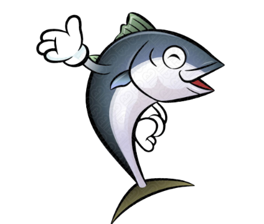

BLUEFIN

ALMAS CAVIAR
A local bluefin on the east coast will run anywhere between $20 and $40 a pound. You could be paying north of $200 a pound for bluefin from Japan. Narrator: According to Wilcox, tuna from Japan is better than American tuna during the peak winter months. While Boston tuna is best during summer and fall.
Almas caviar has been enjoyed as a delicacy back as far as the ancient Greeks who imported it from the area now known as Crimea in the southern Ukraine. According to the Guinness Book of World Records, Almas caviar is regularly sold for $34,500 USD per kilogram, making it the most expensive food in the world.